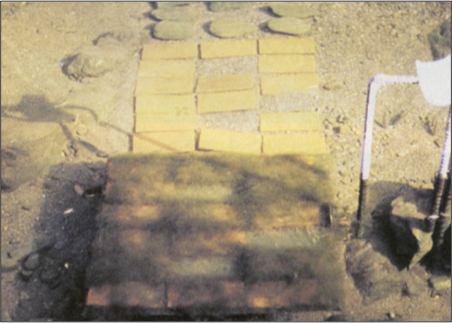
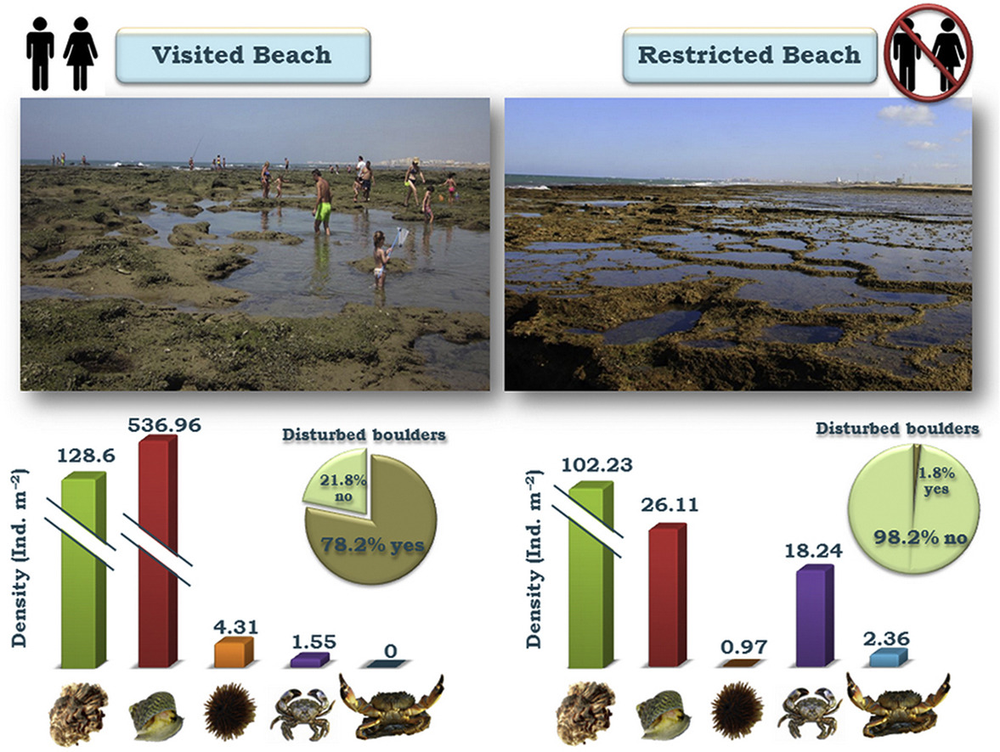
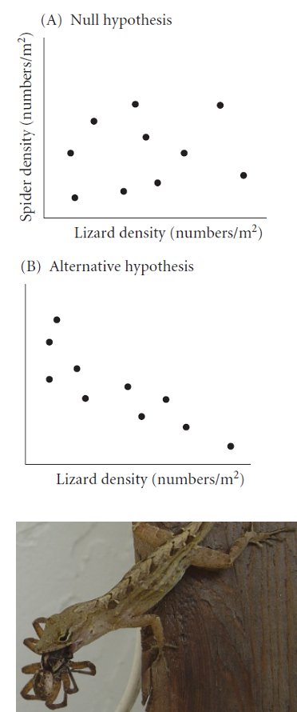
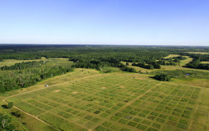
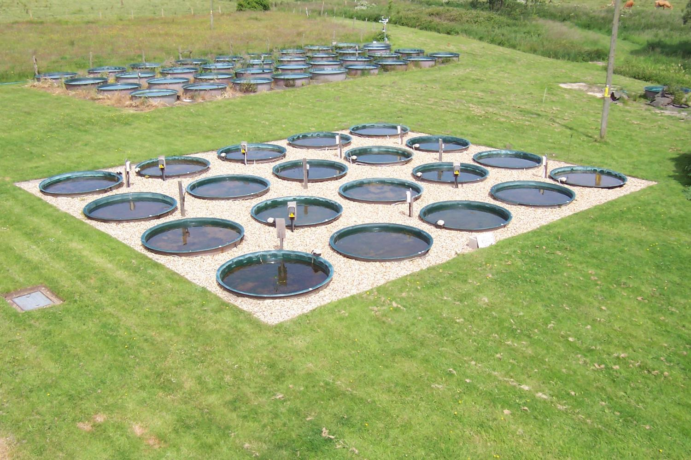
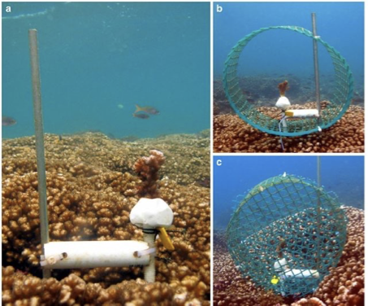
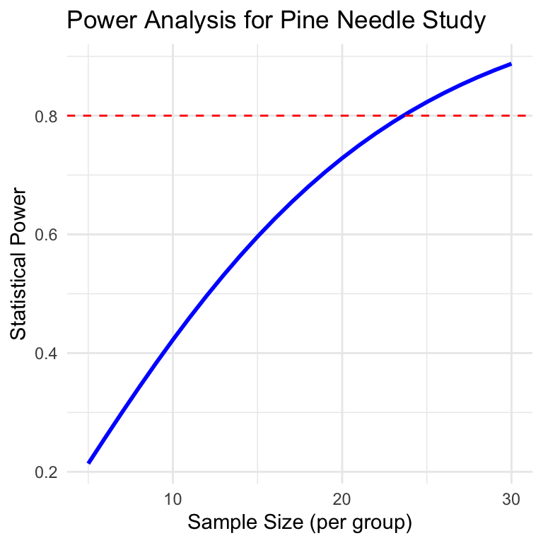
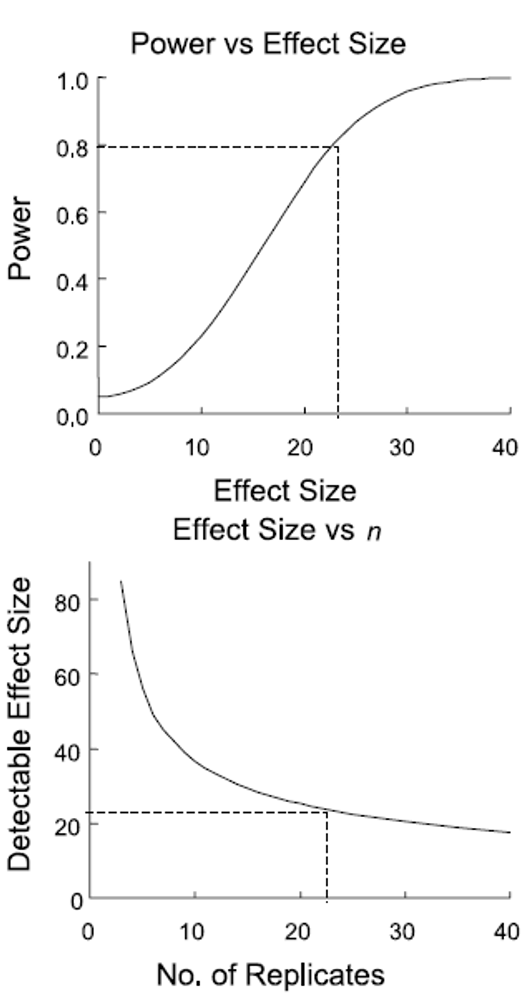

{kind=link}
Treatment Control
1 18 49
2 74 100
3 65 47
4 24 71
5 25 89Lecture 08
Lecture 7 Review
Covered
- What are the assumptions again and how do you assess them
- What to do when assumptions fail
- Mann Whitney Wilcoxin Rank Sum test
- Permutation tests
- There is a paired Wilcoxin Sign test
- this does if it is a + 0 or - in the pair and uses that info to do the test… possible but not very powerful or widely used

Lecture 8 Overview
Today we’ll cover: Chapter 1 in Whitlock and Schluter
- Study design
- Causality in ecology
- Experimental design:
- Replication, controls, randomization, independence
- Sampling in field studies
- Power analysis: a priori and post hoc
- Study design and analysis


Lamberti and Resh 1983
Study Design Fundamentals
- Data analysis has close links to study design
- Statistics cannot save a poorly designed study!
- Key question: what is your research question?
Common scientific questions:
- Spatial/temporal patterns in variable Y?
- what are the problems with this data?
- Effect of factor X on variable Y?
- what should you be worried about and how to fix?
- Are values of variable Y consistent with hypothesis H?
- What is the best estimate of parameter θ (some parameter)?

What sort of experiment is this design and what are the issues with this?
https://ars.els-cdn.com/content/image/1-s2.0-S0272771416307958-fx1_lrg.jpg
Causality in Ecology - Introduction
- Common question: what is the cause of Y?
- Causality is challenging; modern statistics lacks clear language for causality
- Strength of causal inference varies with study design!
- Key factor: control of confounding variables, non independence and correlated varaibles

Causality in Ecology - Framework
- Common question: what is the cause of Y?
- Causality is challenging; modern statistics lacks clear language for causality
- Strength of causal inference varies with study design
- Key factor: control of confounding variables, non independence and correlated varaibles

Causality Example
Example: Spider and lizard populations on small islands
Hypothesis: On small islands, lizard predation controls spider density
We’re interested in causality. How do we get there?
What type of experiment is this?
What are the potential problems with testing this hypothesis?

Natural Experiments
- Not really experiments at all!
- Utilizes natural variation in predictor variable
- E.g., survey plots across natural gradient of lizard density
Potential Problems:
- Cannot determine direction of cause ↔︎ effect relationship
- Uncontrolled variables may affect results

Strengthening Natural Experiments
Good design: Stronger inference from natural experiments
- Reduce confounding (select plots similar in relevant ways)
- Adjust for confounding (measure relevant covariates)
- Identify and measure potential confounding variables

Manipulative Experiments
Experimenter directly manipulates predictor variable and measures response
Randomized, controlled trials: gold standard
Challenges:
- Often restricted to small “plots”; scale-replication trade-off
- Often restricted to small, short-lived organisms
- Often limited to small number of treatments; treatment-replication trade-off
- Still requires careful control of confounding variables!

Experimental Design Principles
Main problem of study design & interpretation: confounding varaibles
- Is the result due to X or other factors?
Good study design seeks to eliminate confounding through:
- Replication
- Randomization
- Controls
- Independence

Replication
Replication is important because:
- Ecological systems are variable
- Need estimate of variability for many statistical methods
Without appropriate replication: Is the difference due to manipulation or something else?
Replication must be on the appropriate scale: match scale of replication to population of interest, otherwise run into pseudoreplication (Hurlbert 1984 - Pseudoreplication and the Design of Ecological Field Experiments)
Replication Examples
- Example 1: Effects of forest fire on soil invertebrate diversity
- Replicate samples from burnt and unburnt parts of a single forest
- What hypothesis is this design addressing?
- Example 2: Effects of copper on barnacle settling
- 2 aquaria (+Cu, control), 5 settling plates in each
- Are settling plates replicates?
- Example 3: Effects of sewage discharge on water quality
- 10 water samples above discharge, 10 below
- Are samples replicates?

Consequences of Pseudoreplication
When you pseudoreplicate, you:
- Underestimate variability
- Increase type I error rate
Replicates must be on scale appropriate to population (& hypothesis!) of interest:
- Different burnt/unburnt forest areas
- Different aquaria
- Different plants and streams

When Replication is Difficult
What if replication is impossible/difficult/expensive?
Example: Effect of temperature on phytoplankton growth
- 4 chambers (5, 10, 15, 20°C), 10 beakers in each
- Are beakers true replicates?
Possible solutions:
- Rerun the experiment a few times, changing temperature of chambers - block by time
- Try to account for all possible differences between chambers (light levels, humidity, contamination) - block by chamber

Controls or reference?
Key question: Is response due to manipulation/hypothesized mechanism or external factor?
Controls help address this question:
- Experimental units treated exactly as the manipulated units, except no manipulation under investigation
- Can be tricky to implement; requires careful thought
Examples:
- In toxicology, controls and treatment groups must both be injected, but control does not receive the substance under study
- Predator exclosures often produce “cage effects”
- need two controls: a grazer/predator control and a “cage control”

Activity 4: Designing Controls
WarningActivity 4: Designing Controls for Pine Experiments
Work in small groups to design appropriate controls for each experiment:
- Testing whether pine needle length is affected by a particular fertilizer
- Testing whether pine needle density affects water retention during drought using enclosed branches
- Testing whether sunlight exposure affects pine seedling growth using shade cloth
For each experiment, identify:
- What would be appropriate controls?
- What factors need to be controlled besides the main variable?
- Could there be “cage effects” or similar issues to consider?
Independence
Independence of observations: assumption of many statistical methods
Events are independent if occurrence of one has no effect on occurrence of another
- E.g., offspring of one mother for treatment, offspring of another for control
Temporal/spatial autocorrelation: violation of independence
- Values of variables at certain place/time correlated with values at another place/time
- “Everything is related to everything, but near things are more related than distant things”
- Special methods to adjust for autocorrelation

Randomization
Randomization helps deconfound “lurking” variables:
- Attempts to equalize effects of confounders
Random sampling from population:
- Experimental units should represent random sample from population of interest
- Ensures unbiased population estimates and inference
- E.g., animals in experiment are random subset of all animals that could have been used

Randomization in Practice
Allocation of experimental units to treatment/control:
- Experimental units must have equal chance of being allocated to control or experimental group
- Properly done by random number generation
Randomization is essential at two levels:
- Random selection from population
- Random assignment to treatments
Sampling Design in Field Studies - Simple Random
Simple random design:
- all individuals/sampling units have equal chance of being selected
- Assign number to all possible units, select units using random number generator
- Often tricky in ecology; haphazard is common alternative
- Most population estimates and tests assume random sampling

Sampling Design - Stratified
Stratified designs: if there are distinct strata (groups) in population, may want to sample each independently
- Samples collected from each stratum randomly, n proportional to “size” of stratum
- Means and variances need to be estimated using different procedure; strata included in model

Sampling Design - Cluster
Cluster designs:
- focuses on sampling subunits nested in larger units
- Used when other designs impractical (e.g., due to cost)
- Mean calculation easy, modified procedure for variance
- Nested ANOVA is often appropriate analytical method

Sampling Design - Systematic
Systematic designs:
- sampling units evenly dispersed: “transect” sampling common in ecology
- Used to determine changes along gradient
- Risk: might coincide with some natural pattern

Activity 5: Field Sampling Pine Trees
NoteActivity 5: Field Sampling Pine Trees
Let’s consider sampling pine needles across campus:

- In groups of 3-4, design a sampling strategy to:
- Estimate average needle length across campus (simple random sampling)
- Compare needle lengths between north and south campus areas (stratified sampling)
- Study how needle length changes with distance from the main road (systematic sampling)
- For each strategy, describe:
- How many samples you would take
- Where you would take them
- What additional variables you might measure
Power Analysis Wrap up
- Power is an important aspect of experimental design:
- Low power → higher likelihood of type II error (1-β)
- A study’s power tells us how likely we are to see an effect if one really exists
- Can use power analysis:
- Before experiment (a priori): how many samples do we need?
- what effect size can we detect?
- After experiment (post hoc): was finding of no effect due to lack of effect or poor design?
- Before experiment (a priori): how many samples do we need?
- Power is a function of:
- ES - Effect size
- n - Sample size
- sigma - standard deviation
- α (significance level) - 0.05
\[\text{Power} \propto \frac{ES \alpha \sqrt{n}}{\sigma}\]
A Priori Power Analysis
Using power analysis to plan experiments:
Sample size calculation: how many samples will be needed?
Need to know: desired power, variability, significance level, effect size
Effect size calculation: what kind of effect can we find, given particular design?
Need to know: desired power, variability, significance level, n
Cohen’s d - standardized measure of effect size used in statistical analysis, particularly when comparing two means
- 0.2 = small effect
- 0.5 = medium effect
- 0.8 = large effect
Helps determine the practical significance of research findings, as opposed to just statistical significance (p-values). A Cohen’s d of 0.8 means that the difference between groups is large enough to be substantial in practical terms - specifically, it indicates that the means differ by 0.8 standard deviations.
A Priori Power Analysis Example
How many samples do you need to find this difference
# A priori power analysis for t-test
# How many samples needed per group?
# Parameters
effect_size <- 0.8 # Cohen's d
significance <- 0.05
desired_power <- 0.8
# Calculate sample size needed
pwr.t.test(d = effect_size,
sig.level = significance,
power = desired_power,
type = "two.sample")
Two-sample t test power calculation
n = 25.52458
d = 0.8
sig.level = 0.05
power = 0.8
alternative = two.sided
NOTE: n is number in *each* groupPost Hoc Power Analysis
- Imagine you did not reject null hypothesis - still worth publishing result?
- Is non-significant result due to low power (poor design) or actual no-effect situation?
- Have n and estimate of σ
- Need to define effect size that wanted to detect
- In return get estimate of experiment’s power
- Cohen’s d is calculated as: d = (Mean1 - Mean2) / SD_pooled Where SD_pooled is the pooled standard deviation of both groups.
- Can help convince reviewers that you are a good experimenter, but there really is no effect… please publish my non-significant finding!
Post Hoc Power Analysis Example
# Post hoc power analysis
# If we had n = 20 per group
# Parameters
effect_size <- 0.5 # Medium effect size
significance <- 0.05
sample_size <- 20 # per group
# Calculate achieved power
pwr.t.test(n = sample_size,
d = effect_size,
sig.level = 0.05,
type = "two.sample")
Two-sample t test power calculation
n = 20
d = 0.5
sig.level = 0.05
power = 0.337939
alternative = two.sided
NOTE: n is number in *each* groupActivity 6: Power Analysis for Pine Needle Experiment
ImportantActivity 6: Power Analysis for Pine Needle Experiment
Let’s design a study to compare needle lengths between exposed and sheltered pine trees:
# Based on pilot data, we have these estimates:
exposed_mean <- 75 # mm
sheltered_mean <- 85 # mm
pooled_sd <- 12 # mm
# Calculate Cohen's d effect size
effect_size <- abs(exposed_mean - sheltered_mean) / pooled_sd
effect_size[1] 0.8333333# A priori power analysis
pwr.t.test(d = effect_size,
sig.level = 0.05,
power = 0.8,
type = "two.sample")
Two-sample t test power calculation
n = 23.60467
d = 0.8333333
sig.level = 0.05
power = 0.8
alternative = two.sided
NOTE: n is number in *each* groupActivity 6: Power Curve Visualization
ImportantActivity 6: Power Analysis for Pine Needle Experiment
Let’s design a study to compare needle lengths between exposed and sheltered pine trees:

Questions:
- How many trees should we sample to achieve 80% power?
- If we can only sample 5 trees per group, what is our power?
- How would increasing variability (SD) affect our sample size requirements?
Study Design and Analysis
- Study design is closely linked to statistical analysis
- Recall: - Categorical vs. continuous variables - Dependent vs. independent variables
- Nature of variables dictates analytical approach:
- Match your analysis to your design
- Cannot “fix” poor design with fancy statistics

Summary and Take-Home Messages
Key concepts we covered today:
- Study design is critical - statistics cannot save poor design
- Natural vs. manipulative experiments - different approaches to causality
- Principles of good design:
- Replication at the right scale
- Proper randomization
- Appropriate controls
- Independence
- Power analysis - planning for sufficient sample size
- Match analysis to design - your statistical approach should follow from your experimental design
Remember:
- Correlation ≠ causation
- Beware of pseudoreplication
- Design before you collect data
- Consider practical constraints
- Report everything transparently
References and Additional Resources
- Gotelli, N. J., & Ellison, A. M. (2012). A primer of ecological statistics (2nd ed.). Sinauer Associates.
- Hurlbert, S. H. (1984). Pseudoreplication and the design of ecological field experiments. Ecological Monographs, 54(2), 187-211.
- Quinn, G. P., & Keough, M. J. (2002). Experimental design and data analysis for biologists. Cambridge University Press.
- Zuur, A. F., Ieno, E. N., & Elphick, C. S. (2010). A protocol for data exploration to avoid common statistical problems. Methods in Ecology and Evolution, 1(1), 3-14.